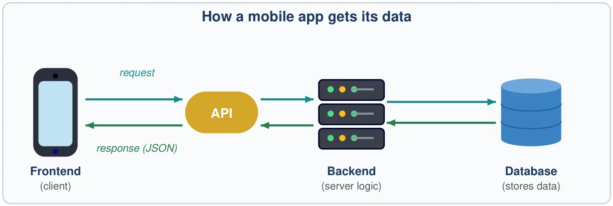

5. How the internet and apps talk
Almost every modern web or mobile app follows the same basic pattern. Learn it once and you will understand every app you meet.
User → Frontend (client) → Backend (server) → Database
5.1 The parts
| Part | Meaning | Examples |
|---|---|---|
| Frontend / client | What the user sees and touches | HTML/CSS/JS page, Android screen, Flutter UI |
| Backend / server | Business rules, login, payments, security | Node.js, Laravel (PHP), Django (Python), Spring (Java) |
| Database | Permanent storage of data | MySQL, PostgreSQL, MongoDB, Firebase |
| API | The messenger between frontend and backend | REST API sending JSON over HTTP |

Figure 5.1: Frontend, API, backend and database
The steps in the picture:
- The Frontend (client) sends a request to the API.
- The API passes it to the Backend (server logic).
- The backend reads or saves data in the Database (stores data).
- The answer travels back as a response (JSON).
5.2 The restaurant analogy
Imagine a restaurant. You (the user) sit in the dining room, which is the frontend. The kitchen is the backend, where food is prepared. The storeroom holding ingredients is the database. The waiter who carries your order to the kitchen and brings back food is the API.
5.3 How the web works in a few steps
- You type a web address (URL), such as https://example.com.
- DNS (like a phone book) finds the server's IP address.
- Your browser sends an HTTP request to that server.
- The server runs code, reads the database if needed, and sends back a response.
- The browser shows the page.
5.4 HTTP basics
| Method | Purpose | Example |
|---|---|---|
| GET | Read data | Load a list of products |
| POST | Create data | Register a new user |
| PUT / PATCH | Update data | Change your profile name |
| DELETE | Remove data | Delete a post |
Common response codes: 200 OK, 201 created, 400 bad request, 401 not logged in, 404 not found, 500 server error.
5.5 JSON: the language of APIs
{
"id": 1,
"name": "Sok Dara",
"role": "student",
"skills": ["HTML", "CSS", "Kotlin"]
}
5.6 The three-layer structure
Well-built apps separate their code into three layers so that each part is easy to change and test:
| Layer | Responsibility | Example |
|---|---|---|
| Presentation (UI) | Display screens and take user input | Login screen, product list |
| Logic (business) | Rules and decisions | Check password, calculate total price |
| Data | Save and load data | Database, API calls, local storage |
Key idea Later you will meet patterns such as MVC, MVVM and Clean Architecture. They are all refinements of this simple three-layer idea.
Review Questions
- Explain frontend, backend, database and API using any analogy.
- What does a 404 response mean?
- Name the three layers of an app and one job of each.